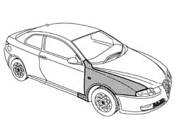
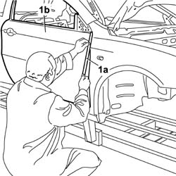
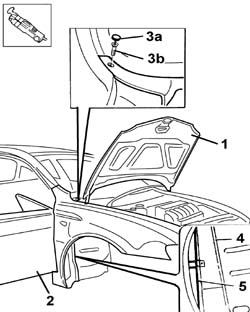
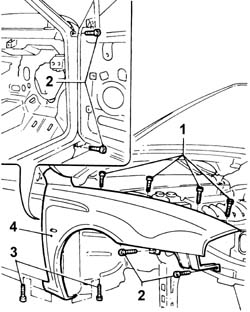
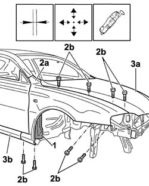
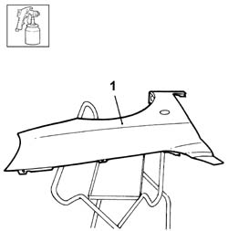
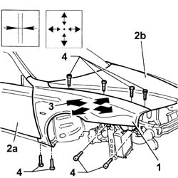
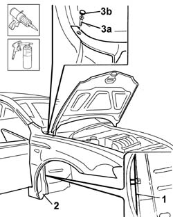

7210E18 R.R. FRONT WING
- Path
- Procedures > 72 PANELS AND FRAME > 7210 REMOVING REFITTING > 7210E EXTERNAL PARTS > 7210E18 R.R. FRONT WING
- Kind
- repair procedure (removal / refitting; the operation number is the code)
- Applies to
- all engines; all production periods
- Interactive page
- https://sloeber94.github.io/elrnDB-aGt/en/#/125002034
Applies to: all engines; all production periods
 Removing
Removing
 Refitting
RefittingCheck that the components connected are not distorted by checking the bodyshell alignment measurements using suitable equipment (gauges, templates or jigs).
Straighten the body as necessary.

Applies to: all engines; all production periods
1. To avoid damaging the paintwork, apply bodywork adhesive tape (1a) along the outer profile of the front door (1b).

Applies to: all engines; all production periods
1. Lift up the bonnet lid.
2. Open the front door.
3. Release the cover (3a), then undo the bolt (3b).
4. Remove the P.V.C. treatment between the front pillar and the wing using a vibrating knife and special blade.
5. After heating, cut the sealant using the special blade between the front pillar and the wing.

Applies to: all engines; all production periods
1. Undo the upper bolts fixing the wing.
2. Undo the side bolts fixing the wing.
3. Undo the bolts fixing the wing.
4. Remove the wing from the vehicle.

Applies to: all engines; all production periods
Refitting
Removing1. Clean the residues of old sealant, thermo-expandable material and P.V.C. using the vibrating knife and special blade.
2. Position the wing (2a) on the vehicle and secure it temporarily using the fixing bolts (2b).
3. Lower the bonnet lid (3a), close the door (3b) and check the alignment and eveness of the surrounding gap.

Applies to: all engines; all production periods
1. Paint the wing following the recommended cycle.

Applies to: all engines; all production periods
1. Position the wing on the vehicle and screw in the fixing bolts without tightening them.
2. Align the wing checking the surrounding lines with the door (2a) and bonnet (2b).
3. The arrows indicate the possible movements for adjusting the wing.
4. Fully tighten the wing fixing bolts.

Applies to: all engines; all production periods
1. Apply sealant to the area illustrated (following the recommended cycle).
2. Renew the P.V.C. treatment in the areas shown (following the recommended cycle).
3. Undo the bolt (3a) and attach the cover (3b).
